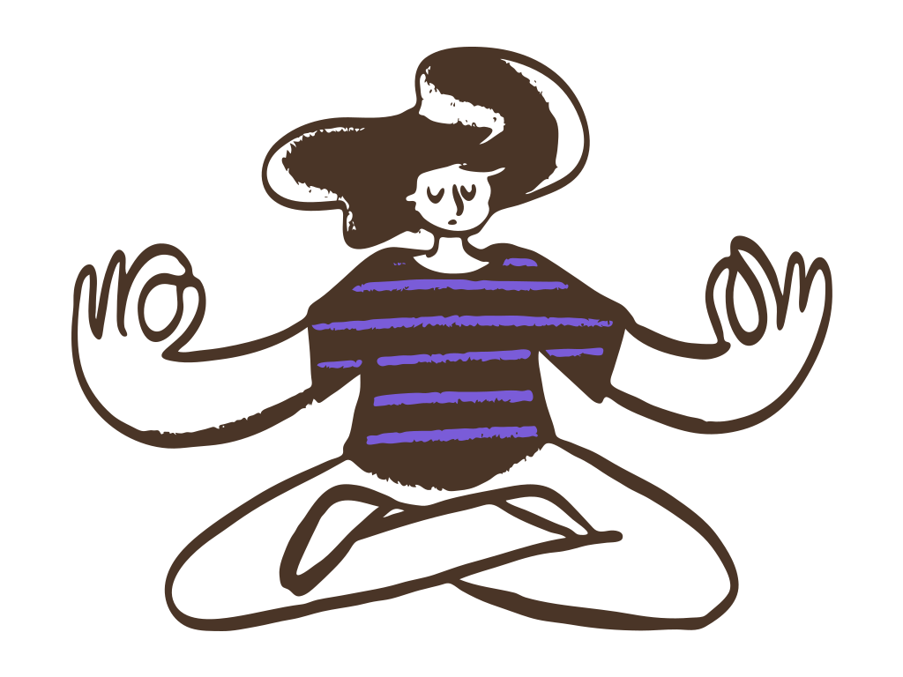

孩子最拿手的那件事，大人說清楚給他聽，他才知道那也是一種能力
七月底，勞動部主辦的第56屆全國技能競賽在臺北南港展覽館比了三天。官方新聞稿寫的是：「辦理青年組55個職類、青少年組13個職類，共有1,070名技能好手同場競技。」55 個職類的意思是，光是這一場，就有 55 種不同的厲害，而且大部分都不是考卷量得到的。把這件事放回家裡，會冒出一句很難回答的話：孩子最拿手的那件事，我們說得出他到底厲害在哪裡嗎？
2026-09-01 週二 閱讀全文 →孩子畫完拿過來，那張紙上正在發生一件事，他等著講給大人聽
五歲的小蓁趴在地板上畫了好一陣子。畫完她站起來，把那張紙舉高，走到大人面前說：你看，他在跑。紙上有一個小人、幾條長長的線，還有一團紅色。大人低頭看了兩秒，問了一句：這是什麼？
2026-08-31 週一 閱讀全文 →明天開學，有的孩子先把東西排好，有的先問明天的事，兩種都是在準備
明天就是開學日，這學期的第一天。今天傍晚的家裡，多半有兩種聲音：一種是把明天要帶的東西一樣一樣排好，排完再數一次；一種是走過來問，幾點出門、第一節上什麼、要不要帶水壺。大人聽到前面那一種會放心，聽到後面那一種，通常會回一句：你先去把東西收一收。
2026-08-30 週日 閱讀全文 →待辦清單以外，家長也需要記下今天自己做到的一件事
覺知．家長學堂那一堂課的最後，帶課老師發下一張比手掌還小的紙，上面只有一行字要填：你這個月做得不錯的是哪一件事。教室安靜下來。有人的筆停在半空中，有人寫了兩個字又劃掉。那一行看起來最好填，結果是全場停最久的一題。
2026-08-29 週六 閱讀全文 →學習歷程想重傳一次，孩子是在配合校系，還是更知道自己想走哪條路？
今年八月，學生團體 EdYouth 公布了第五年的課綱觀察報告。中央社的報導寫，這份調查在「6月9日至8月3日間透過社群、教師宣傳、行文到各校等方式，完成532份有效問卷」，結果是「超過8成學生支持高三應開放重製上傳」學習歷程檔案；學生給的主因是「對先前製作的成果不滿意，擔心不符合大學校系的需求」。新聞在談的是制度該不該調整。不過同一句話放回一個高中生的書桌前面，它是另一件事——孩子把一年前自己交出去的東西重新打開，看完以後說，我想再做一次。
2026-08-28 週五 閱讀全文 →「等一下」換成「排在誰後面」，五歲的孩子就知道什麼時候輪到自己
覺知．啟蒙班的教室裡，扮演區只有一頂消防員帽。那頂帽子每天都有人搶著要戴，這天三個孩子圍在架子前面，誰都不肯先走開。老師蹲下來，說了一句大人最常說的話：「要輪流啊，等一下就換你。」五歲的小柚點點頭，退到旁邊。三十秒以後，他又走回架子旁邊問：「還要等多久？」這一篇要談的不是怎麼要求孩子有耐心，而是「等一下」這三個字，在五歲的孩子那邊到底長什麼樣子。
2026-08-27 週四 閱讀全文 →求助也是一種能力，大人開口問人的那一次，孩子就在旁邊學
「你怎麼什麼都敢問？」暑假最後一個週末，覺知家長學堂的一位媽媽帶孩子去社區運動中心辦證件，回程的公車上，孩子突然冒出這一句。她愣了一下——在她那邊，那只是「不會就去問」；在孩子那邊，那是一件他自己還開不了口的事。這一篇要談的不是怎麼鼓勵孩子勇敢，而是大人本來就會做的那個動作，怎麼做得讓孩子在旁邊聽得清楚。
2026-08-26 週三 閱讀全文 →答案可以問 AI，怎麼想的要孩子自己講一次
這幾天各校陸續公告一場論壇：親子天下 2026 教育創新國際年會，9 月 23 日在臺北文創舉行，主題叫做「從算力到心力：AI x SEL 共構未來學習」。算力是機器的事，心力是孩子的事，這個對照放在論壇的議程上很好聽，放回家裡就是一個很具體的畫面：暑假作業剩最後幾頁，孩子把整題打進 AI，三十秒就有一段寫得漂漂亮亮的答案。這一篇要談的不是要不要讓他用，而是答案回來之後，大人接的那一句話。
2026-08-25 週二 閱讀全文 →答應孩子的事臨時取消，那次約定還沒結束，把原因講完再約一次時間
「週六下午我載你去。」這句話說出口的時候，沒有人會想到它會被取消。可是接下來那一週，公司臨時排了事、家裡有長輩要看醫生，或者只是那天早上整個人爬不起來——說好的事，就是會有去不成的時候。大人心裡有一點過意不去，孩子嘴上說沒關係，這一題看起來就這樣結束了。這一篇要談的，是那句「沒關係」之後，還有一件事沒有做完。
2026-08-24 週一 閱讀全文 →熄燈以後孩子還沒睡著，比催他快睡更有用的，是先問他身體的感覺
「孩子動一動，真的比較好睡嗎？」照護線上在八月十七日整理了一篇統合分析，納入十四項研究，指出有氧運動「可能」改善學齡兒童與青少年的入睡時間、睡眠總時數、睡眠效率和夜間醒來次數。同一篇也寫得很老實：各研究之間差異很大，連「睡眠改善」怎麼算，每個研究的定義都不太一樣。白天讓孩子動一動，值得試。只是熄燈以後那一段，家裡多半還是同一個畫面——孩子躺著、眼睛睜著，然後在黑暗裡喊你一聲。
2026-08-23 週日 閱讀全文 →「我也要！」孩子搶著擺碗筷，就把這件事整件交給他
「我也要！」廚房裡最常聽到的就是這一句。大人正在盛湯、端碗、把菜放上桌，孩子伸手就要接過去。多數人的下一句是：「你去旁邊玩，我很快就好。」這幾秒鐘看起來很小，可是孩子想要的，其實不只是那份工作。
2026-08-22 週六 閱讀全文 →全國補習班比超商還多，孩子其實更需要學會說出自己想學什麼
黃昆輝教授教育基金會八月初公布「重要教育議題民意追蹤調查」，其中一個數字被很多媒體拿去下標：全國立案補習班今年已經突破一萬七千家，超過便利商店的總數。同一份調查裡，57.9% 的民眾認同補習有助孩子考上一所好學校，比民國 107 年那一次多了 12.6 個百分點。
2026-08-21 週五 閱讀全文 →孩子的每一個為什麼，是先給他答案，還是先聽他怎麼想？
四歲多的孩子從幼兒園走回家，短短十分鐘可以問十幾個為什麼。為什麼天會黑、為什麼狗要用鼻子聞、為什麼你要去上班。大人一開始還接得住，接到第七個就會開始想：這些問題，真的每一個都要回答嗎？
2026-08-20 週四 閱讀全文 →孩子和同學吵的那場架，正是他在學習和好
教育部最新一份學生人數推估這幾天上了新聞：未來十六個學年，國小學生總數平均每年少三點八萬人，四年後就會跌破一百萬人。家長看到這種數字，多半先想到學校會不會併、班級會不會少。不過對孩子的每一天來說，最先變少的是另一樣東西。
2026-08-19 週三 閱讀全文 →開學前跟老師說孩子的事，先想好你希望老師幫忙留意什麼
開學日就在八月三十一日，只剩十幾天。這幾天學苑接到的詢問裡，有不少是同一件事：想在開學前先跟老師說一下孩子的狀況，又怕講太多變成給老師壓力，講太少老師又不知道從哪裡幫起。
2026-08-18 週二 閱讀全文 →帶孩子看展，走完整個展和記住一件作品，哪一個比較值得？
暑假只剩兩個星期，美術館和各種特展這幾天都是人。學苑最近接到好幾通電話，問的都是同一件事：週末排了半天隊帶孩子去看展，門票也不便宜，孩子卻走不到十分鐘就開始問「還有多久可以走」。這一趟，到底有沒有意義？
2026-08-17 週一 閱讀全文 →孩子一句「我只是喜歡弄那個」，比一張志願表更早透露方向
這個暑假有一則升學新聞被很多家長轉傳。北市高中學生家長聯合會副總會長陳憲政受訪時說，「所有家長擔心都是一樣，AI會不會取代工作」，也提到高中選類組時「文法商明顯非常少，大部分集中二類組」。學苑這幾天接到好幾通電話，問的都不是高中的事——問的是，孩子現在才小學，我可以先做什麼。
2026-08-16 週日 閱讀全文 →孩子說「我真的很需要」，讓他自己說說看，是需要還是想要
暑假只剩兩個星期，賣場的文具區這幾天特別擠。學苑這陣子聽到好幾位家長講同一件事：本來只要買一支筆、一本簿子，推車裡卻愈疊愈多，最後在櫃檯前面僵持了十分鐘。孩子抓著那樣東西不放，理由講得很認真——我真的很需要。
2026-08-15 週六 閱讀全文 →孩子說「公園有一隻恐龍」，這是想像力，一起聽孩子好好分享
放學路上，孩子突然說：公園那邊有一隻恐龍，躲在溜滑梯後面，牠還看了我一眼。大人多半會先笑一下，接著那句話就冒上來了——不可以亂講喔。這個暑假家長來學苑問得最多的其中一題就是：孩子講得這麼認真，這樣算不算說謊？
2026-08-14 週五 閱讀全文 →孩子說「不用啦，我在家就好」，先別急著把他推出門
暑假只剩三個星期。《親子天下》剛發表的國中小學生萬人調查裡，有一項發現被很多老師拿來討論：愈來愈多孩子覺得，待在自己房間滑手機、追劇、打電動，比跟朋友出門還要放鬆，報導把這一代稱為「獨處世代」。這個暑假，我們在學苑也常聽到家長講同一句話——他整個暑假都沒約過人。而孩子回的，通常也是同一句：不用啦，我在家就好。
2026-08-13 週四 閱讀全文 →作業寫得快又正確，孩子是透過 AI 學會還是只知道答案？
這個星期一，親子天下發表了全台第一份把學生、老師、家長三方擺在一起對照的 AI 素養調查，標題直接問了一句很重的話：孩子的大腦，外包了嗎？調查裡最值得停下來的，不是孩子用不用 AI，而是三邊看到的根本是不同的景象——老師普遍擔心孩子只想要答案、不在意過程，孩子自己卻覺得沒什麼問題。另外一半更安靜：孩子開始把心事說給 AI 聽，而家長是三個角色裡，最不容易察覺的那一個。
2026-08-12 週三 閱讀全文 →「媽媽都會弄好啊」，比忘記帶東西更值得注意
開學剩沒幾天，一位媽媽跟我們說起那個晚上：她照慣例幫孩子把新書包整理好，鉛筆一支支削尖、聯絡簿夾進最外層、水壺插在側邊，連衛生紙和備用的口罩都補齊。做這些的時候她幾乎沒過腦，手比腦子還熟。直到拉上拉鍊，她順口問孩子知不知道自己要帶什麼去學校，孩子一臉茫然地看著她說「不知道耶，媽媽都會弄好啊」——那一刻她愣住了。孩子下週就要上小一了，可是書包裡有什麼、東西放在哪，從來都不是他在管的事。
2026-08-11 週二 閱讀全文 →開學前越叫他靜下來，他反而越坐不住
開學只剩三個星期，一位家長跟我們說，她開始緊張孩子的心還飄在暑假裡，天天催他坐到書桌前，把剩下的作業補一補。可是孩子一坐下就像屁股裝了彈簧，寫沒兩行就起來削鉛筆、找水喝、東摸西摸。她越催，孩子越坐不住，火氣也一路往上衝，差點又要對他吼「你就不能好好坐著嗎」。
2026-08-10 週一 閱讀全文 →就差最後一塊，他堆了一下午的積木塔全垮了
那是個沒有特別排行程的週日午後，一位媽媽跟我們說起這一幕：兒子把整箱積木倒在地墊上，說要疊一座比他還高的塔。他一塊一塊、專心疊了一下午，就在放上最後一塊的那一刻，整座塔嘩啦一聲全垮了。孩子先是愣住，接著眼淚直掉，一邊哭一邊把積木撥得滿地都是，喊著「我不要疊了」。她站在旁邊，「這有什麼好哭」那句話，差一點就脫口而出。
2026-08-09 週日 閱讀全文 →父親節，孩子把卡片遞過去，爸爸一手還在修電風扇
父親節那天下午，一位媽媽跟我們說起家裡的這一幕：女兒躲在房間裡摺了好久，才把一張皺皺的卡片捧出來，站在客廳門口，等爸爸抬頭。爸爸那時正蹲在地上，跟那台吹了一整個夏天、開始咯咯作響的電風扇奮戰，聽到聲音，手沒停，只回了句：好，謝謝，先放桌上。女兒把卡片輕輕放下，肩膀垮了一點點，轉身回房。站在廚房看著這一切的媽媽，心裡替女兒有點不是滋味。
2026-08-08 週六 閱讀全文 →一群孩子都繞著他轉，大人卻總嫌他不夠用功
這個暑假，一位媽媽常在窗邊看到同一個畫面：樓下那塊空地，一群孩子在玩，站在中間喊著規則、分著隊伍、誰跟誰一組講半天的，是她兒子。有人玩到哭了，他會跑過去把規則臨時改一改；有人吵架，他多半會站中間喬，喬到兩邊都願意再玩下去。她說老實話，一開始心裡是有點嘀咕的——別人家孩子這個暑假在寫評量、上英文，自己家這個成天只想著揪人出來玩。這樣，真的只是在浪費時間嗎？
2026-08-07 週五 閱讀全文 →開學剩不到一個月，他還是天天睡到中午
暑假快過完了，我們家的作息整個顛倒過來。他晚上不睏，房間的燈半夜還亮著，早上怎麼叫都叫不起來，一天常常是從中午才開始。我算了一下，開學剩不到一個月，可是他現在這個時鐘，離上學要的那個，差了一大截。掀他棉被、把手機收走，我都試過，隔天又打回原形——這種時候，到底該硬把他叫起來，還是先想想他是怎麼變成這樣的？
2026-08-06 週四 閱讀全文 →他舉著那張畫，我怎麼看都認不出畫的是什麼
暑假這陣子，家裡的畫紙一張接一張。他常常畫完就衝過來，把紙高高舉到我面前：「媽媽你看！」我低頭一看，老實說，滿滿一張五顏六色，我怎麼認都認不出那到底是什麼。想稱讚又怕猜錯，想問又不知道從哪裡問起——孩子這樣舉著畫站在你面前，這一句到底該怎麼接？
2026-08-05 週三 閱讀全文 →他把整份數學作業拍給 AI，答案兩秒就出來了
暑假一路玩到現在，開學倒數剩沒幾天，一位家長跟我們說，孩子書桌上那疊暑假作業還躺在那裡，動過的頁數不多。她催了幾次，孩子都說「來得及啦」。偏偏這幾天他突然勤快起來，關在房間裡寫得很快，她心裡本來還有點高興，想說這孩子總算開竅了。直到有一次端水進去，剛好看到他在做什麼——他把題目拍給手機裡的 AI，兩秒鐘，答案就出來了。
2026-08-04 週二 閱讀全文 →開學前他一直說「沒事」，你會怎麼接下一句
再過幾個星期就開學了。這幾天你發現孩子的房門關得比平常久，你問他晚餐想吃什麼，他回一個字：都可以。你問他暑假作業還剩多少，他說：還好。你隨口提一句「快開學囉」，他「嗯」了一聲，就把話收了回去。你站在門口，忽然有點不確定——他只是懶得講話，還是有什麼事，正卡在他自己那邊，還沒決定要不要說出口。
2026-08-03 週一 閱讀全文 →如果重來一次，你會選一樣的科系嗎
「這個以後要念什麼？」阿公阿嬤家的飯桌上，長輩指著在旁邊剝橘子的孩子，問了這句話。孩子沒抬頭，你也一時接不上。就在前幾天，你剛好看到一份調查：據 104 人力銀行問一群已經在工作的過來人，如果重來一次會怎麼填大學志願，結果有七成二的人說，會選一個不一樣的校系。那個數字讓你愣了一下——因為你發現，連自己當年為什麼選那個系，都想不太起來了。
2026-08-02 週日 閱讀全文 →小小孩在賣場躺地上大哭，那句「再吵就回家」其實他聽不懂
「再吵我們就回家。」這句話，你幾乎是反射講出去的。結帳的隊伍前面，他手上那包餅乾被你放回架上，人就整個往地上坐、往下躺。推車卡在走道中間，後面有人在等，你一手扶著推車，一手想把他拉起來。那一分鐘很長，長到你覺得全場的人都在看你怎麼收場。
2026-08-01 週六 閱讀全文 →孩子滑手機常常忘了時間，提醒也沒用，該怎麼辦？
社區圖書館的自習區，冷氣開得很強。他把兩本作業攤開，講義下面壓著手機。震了一下。他停了大概三秒，才伸手把它翻過來。你坐在後面那一排，看著那三秒變成一分鐘，一分鐘變成十分鐘。你沒有出聲，因為一開口就變成你在盯他；可是這個下午，也就這樣過去了。
2026-07-31 週五 閱讀全文 →老師說「自由發揮」，他卻盯著那張白紙半小時無從下手
暑假作業本翻到最後一頁，題目寫著：主題不限，自由發揮。你以為這頁最好寫，結果整個下午過去，那張圖畫紙還是白的。他坐在那裡，筆拿起來又放下，中間去喝了兩次水、削了一次鉛筆。你走過去問他怎麼還沒開始，他說：「不知道要畫什麼。」語氣有點煩，也有點心虛。
2026-07-30 週四 閱讀全文 →「你以後想當什麼？」這句問了三十年的話，現在問不出東西了——換一種問法
過年才問過一次，暑假回外婆家又被問了一次：「欸，你以後想當什麼啊？」十四歲的他手上還拿著飲料，很快地說了一句「不知道」，然後就走到旁邊去了。外婆轉頭跟你說，這孩子怎麼都沒個志向。你笑一笑帶過去，心裡其實有點在意：他是真的沒想過，還是這個問題他答不出來？
2026-07-29 週三 閱讀全文 →孩子很會用 AI，不代表他會判斷——真正該練的，是他問得出好問題
他寫暑假報告，你端水果進房間，瞄到螢幕上是一個對話框。你問這哪來的，他說我問 AI 啊。你把報告接過來看，寫得比他平常通順很多，資料也一條一條列得整齊。你正想稱讚，看到其中一段引用了一個你沒聽過的機構，數字漂亮得有點剛好。你問他這個哪裡來的，他說：「AI 寫的啊，應該是真的吧。」
2026-07-28 週二 閱讀全文 →他只有一科特別強，其他都普普——這種孩子在成績單上很吃虧，在真實世界卻不一定
期末成績單放在餐桌上。自然九十六，其他科六字頭七字頭一路排下來。你先看到的當然是那幾個六，手指在上面停了一下，心裡開始算暑假要補哪兩科。坐在對面的他把碗端起來擋住臉，小聲說了一句：「我自然很高欸。」你「嗯」了一聲，眼睛還在那排六字頭上。
2026-07-27 週一 閱讀全文 →同一個班、同一份作業，男生怎麼看起來就是慢一拍？——先別急著說他不專心
親師座談會上，老師講到你兒子時停了一下，說：「他很聰明，就是坐不住，作業常常寫到一半跑掉。」你點頭記下來。回家的路上你一直在想，隔壁座位那個女生，媽媽聽到的是「很穩定、很負責」。同樣二年級，同一份作業，怎麼差這麼多。你心裡冒出一個不太敢問出口的問題：是我兒子真的有問題，還是他只是還沒到？
2026-07-26 週日 閱讀全文 →澳洲十六歲、法國十五歲——各國一個接一個立法禁社群，台灣家長該期待跟進嗎？
晚餐時間，你滑到一則新聞：澳洲禁止十六歲以下用社群、法國要禁十五歲以下註冊。你抬頭看了一眼客廳，你家那個十三歲的正躺在沙發上，手機舉在臉上方，一則接一則。你心裡浮出一個有點複雜的念頭——如果法律直接規定，是不是我就不用每天當那個壞人了。
2026-07-25 週六 閱讀全文 →孩子整個暑假幾乎沒曬到太陽——近視真正的原因，可能不是滑手機看太久
暑假過了一半，你翻手機相簿想找一張他在外面的照片，往上滑了很久才找到一張——還是六月結業式那天拍的。這一個月他的路線很固定：冷氣房、安親班、回家，中間隔著一段有遮陽的走廊。你原本擔心的是他平板看太久，直到上個月配眼鏡，度數又往上跳了一段。
2026-07-24 週五 閱讀全文 →全台一萬七千家安親班剛被查過一輪——但放學後那三小時，對孩子到底是什麼？
八月的第一個星期，你手機裡開著三個分頁：兩家安親班的價目表，一家課後照顧中心的接送時間。你問過同事、問過鄰居，得到的答案都差不多——「那家管得比較嚴」「那家作業會盯完才放人」。你把它們記在備忘錄裡，可是有一題一直沒有人回答你：他每天在那裡的那三個小時，到底是在過什麼樣的日子？
2026-07-23 週四 閱讀全文 →AI 都會寫作業、畫圖、寫程式了，孩子以後還要學什麼？——與其拚贏 AI，不如把他天生的優勢養大
這個暑假，你可能也在手機上滑到那些讓人心裡一沉的新聞：AI 現在會幫你寫作文、會畫出比你還厲害的圖，連程式都能幾秒鐘生出來。很多爸媽看著看著就開始發慌——如果這些以前要苦練很久的本事，AI 一下就會了，那我的孩子拚死拚活念的這些，以後到底還有沒有用？該讓他學什麼，才不會被時代甩在後面？這個焦慮很真實。但它，其實問錯了方向。
2026-07-22 週三 閱讀全文 →「再看十分鐘」——暑假天天為這句話開戰，其實你要交出去的不是時間，是那個計時器
「媽，再看十分鐘就好。」這句話，你今年暑假大概聽了幾百次。你說好，十分鐘到了，他沒動；你再喊一次，他說「這集快完了」；喊到第三次你音量已經上去，他才心不甘情不願地按暫停，然後整個晚上臉都是臭的。你收完碗盤坐下來，有點無力：明明講好的，為什麼每天都要重來一次？暑假還有一個多月，難道要這樣吵到開學。其實每天卡住的，可能不是那十分鐘。是「誰在計時」這件事，從頭到尾都握在你手上。
2026-07-21 週二 閱讀全文 →「媽，我好無聊」——暑假第三週，這句話在三個年紀，講的是三件不同的事
暑假第三週，晚餐都還沒收，孩子又晃到你旁邊：「媽，我好無聊。」你手上一堆事還沒做完，第一個反應是報菜色——「不然你去看書啊」「要不要玩積木？」「出去騎腳踏車好不好？」一輪講完，他每一樣都搖頭，最後又躺回沙發上滑手機。你有點煩，也有點心虛：是不是我暑假排得不夠滿？其實這四個字，在不同年紀的孩子嘴裡，講的常常不是同一件事。
2026-07-20 週一 閱讀全文 →蠟筆才剛拿起來就丟掉，他說「我不會畫」——他不是懶，是眼前那一步對他來說太困難了
暑假的下午，你把圖畫紙和蠟筆攤在餐桌上，椅子都還沒坐熱，孩子把筆一丟：「我不會畫。」你有點氣——他明明連一筆都還沒動。你說「你先試試看嘛」「畫錯也沒關係」，他卻整個人滑下椅子，說什麼都不肯回來。那三個字不是在跟你賭氣，是他真的不知道，第一步要從哪裡開始。
2026-07-19 週日 閱讀全文 →「我講一百次他不聽，老師講一句他就做」——這不是你輸了，是他身邊多了一個說得上話的大人
「我講一百次他不聽，老師講一句他就做。」這句話你大概講過，講的時候半是好笑，半是有點酸。他在家把門關上、話講三個字就沒了，卻願意在球場邊，跟教練聊上二十分鐘。你心裡忍不住嘀咕：我養他這麼大，怎麼輪不到我？但如果換個角度看——孩子肯把心事交給另一個大人，其實不是你被換掉了，而是他長大的路上，多了一個肯聽他講話的人。
2026-07-18 週六 閱讀全文 →AI 都能幫孩子寫作業了，加州卻反過來規定小學生要練「草寫」——這一步「慢功夫」，其實是在保護孩子的大腦
暑假裡，孩子用平板查資料、用 AI 幫忙想作文，一整天下來，親手寫的字沒幾個。你一邊覺得他很跟得上時代，一邊又有點說不上來的擔心：這樣下去，他還需要好好寫字嗎？就在大家都往 AI 加速的時候，美國加州卻踩了一次煞車——立法規定小學生要重新學「草寫」。這個看似復古的決定背後，藏著一個關於大腦的提醒。
2026-07-17 週五 閱讀全文 →孩子一哭鬧就喊「你冷靜一點」？其實他當下真的做不到——先陪他把氣吸到肚子裡，身體穩了，情緒才跟得上
暑假的午後，孩子為了一件小事哭到滿臉通紅。你蹲下來、也深吸一口氣，說出那句幾乎每個爸媽都喊過的話：「你先冷靜一點！」結果他哭得更大聲。不是他跟你作對——當情緒的浪整個蓋過來，那個負責「講道理」的大腦，其實暫時當機了。他需要的不是道理，是一個能讓身體先安定下來的小開關。
2026-07-16 週四 閱讀全文 →孩子一見到人就躲到你身後、怎麼哄都不肯叫人——他不是沒禮貌，是天生需要多一點暖身時間
有一種孩子，走到哪裡都要先躲在爸媽身後。親戚熱情地喊「快叫人」，他卻把臉埋得更深；同齡的孩子已經玩成一團，他還站在門邊看。你一邊賠笑說「他比較怕生」，一邊心裡有點急：是不是我太少帶他出門？是不是他太沒膽？其實，那個慢慢來的孩子，不是不懂禮貌，也不是不友善。他只是天生需要多一點暖身的時間，才敢把腳，從你身後跨出去。
2026-07-15 週三 閱讀全文 →暑假兩個孩子從早吵到晚，你忙著當裁判——但真正該練的，是讓他們自己學會收場
暑假過了一半，家裡兩個孩子好像有用不完的火藥。搶一支遙控器、爭誰先洗澡、一句「他先弄我的」，就能讓你放下手邊所有事衝過去。你像法官一樣聽兩造說詞、判誰對誰錯，結果不到十分鐘，又是一場。這篇想跟你聊：為什麼你越當裁判，孩子越學不會自己收場——以及一個很小、卻能改變整個暑假的轉念。
2026-07-14 週二 閱讀全文 →全國教育會議上，第一線老師說「大人自己要先被接住」——這句話，也寫給每一個爸媽
2026 年 7 月，全台的教育局處長聚在新竹開了一場會。談的不是升學率、也不是又要加考什麼，而是孩子的「情緒」。會議上被反覆提起、最讓人停下來的一句話，其實不是講孩子的，是講大人的——第一線的老師說：「大人自己要先被接住，才接得住孩子。」這句話，聽起來像在說老師，卻也剛好，寫給每一個正在陪孩子長大的爸媽。
2026-07-13 週一 閱讀全文 →暑假才第二週，你已經累到不想說話——但「當爸媽」這件事，本來就不用天天滿分
暑假才開始兩個禮拜，你已經有點認不得自己了。孩子一放假，你順理成章變成三餐、才藝班、出遊行程的總負責人；睡前滑手機，看到別人家精心安排的暑假日程，心裡又默默補一句：「我是不是做得不夠？」一整天下來，你累到連話都不想說，卻還在檢討自己哪裡不夠好。今天這一篇，不談怎麼把孩子帶得更好——想先陪你，把對自己的要求放下一點。
2026-07-11 週六 閱讀全文 →孩子開始說謊，你先別急著生氣——同一句謊話，在三歲、九歲、十五歲，代表的是完全不同的事
那天你無意間發現，孩子把考卷塞在書包最底層，嘴上卻說「老師還沒發」。那個當下，心裡最先冒出來的，往往不是難過，而是一股火：他居然會騙我了？先別急著把「說謊」兩個字，跟「品德變壞」畫上等號。同樣是沒說實話，在三歲、九歲、十五歲的孩子身上，其實是三件完全不同的事。看懂它們的差別，你才會知道這一次，真正該接住的到底是什麼。
2026-07-10 週五 閱讀全文 →孩子紅著眼說「他們都不跟我玩」，你急著出的主意，可能讓他把心事吞回去
放學路上，八歲的孩子忽然安靜下來，走了一段才小聲說：「今天小杰他們玩鬼抓人，都不讓我加入。」做爸媽的，心疼又著急，話幾乎是反射性地衝出口：「那你去找別人玩就好啦，班上又不是只有他們。」說完還覺得自己很正面、很開導，但孩子沒有變開心，反而把頭撇開，一路不再說話。這段對話，幾乎每個學齡孩子的家庭都上演過。今天我們不急著評對錯，只把它倒帶，一句一句拆開看：孩子到底聽到了什麼，我們又能怎麼重來一次。
2026-07-09 週四 閱讀全文 →青春期的孩子動不動就情緒炸裂，你以為他「出問題」了——但這位心理學家說，那往往是健康的證據
孩子上了國中、高中之後，情緒好像忽然被調大了音量。前一秒還好好的，下一秒就摔門、爆哭，或是把自己關進房間、一句話都不肯說。很多爸媽在夜裡會冒出同一個念頭：他這樣正常嗎，是不是心理生病了？今天想跟你分享一本書——臨床心理學家 Lisa Damour 在 2023 年出版的《The Emotional Lives of Teenagers》（青少年的情緒生活）。它給了一個讓人鬆一口氣的答案：孩子會痛苦，往往不是壞事，反而正是心理健康的證據。
2026-07-08 週三 閱讀全文 →暑假才剛開始，孩子已經喊了十次「我好無聊」——你會遞上手機，還是讓他無聊下去？
暑假才剛開始，家長群組裡就冒出一句熟悉的抱怨：「放假第三天，孩子已經喊了十次『我好無聊』。」幾乎在同一時間，美國社會心理學家 Jonathan Haidt 的《失控的焦慮世代》（The Anxious Generation）仍在全球被反覆討論。他談的雖然是手機與青少年的心理健康，但其中一個提醒剛好和這個暑假有關——我們這一代大人，太怕孩子無聊了。孩子一喊無聊，我們的手幾乎是反射性地，就伸向了手機，或是報名表。今天想跟你聊的是：如果先忍住那個動作，會發生什麼事？
2026-07-07 週二 閱讀全文 →孩子還說不清楚，你就急著糾正——但覺知教育的第一步，從來不是「教」
傍晚的客廳，四歲的孩子把剛疊好的一整座積木推倒，然後放聲大哭。你第一個反應，多半是脫口而出：「哭什麼哭，自己推倒的還哭？」或者急著補一句道理：「你看，就叫你不要疊那麼高。」這些話都沒有錯，但如果你發現，講完之後孩子哭得更兇、你也更煩躁——也許問題不在他不聽，而在我們常常把順序放反了。今天想跟你聊一件覺知教育很在意、卻最常被跳過的小事：在「教」孩子之前，先「回應」他。
2026-07-06 週一 閱讀全文 →明明只是件小事，你卻瞬間爆炸——先別怪孩子，是你的「舊按鈕」被踩到了
週日的傍晚，你已經累了一整天。孩子把桌上那杯水打翻了，水漫過作業本、滴到地上——其實只是一杯水。但不知道為什麼，你的火「唰」地一下就上來，聲音比你想的還大：「你到底在幹嘛！講幾次了！」話一出口，你看見他肩膀縮了一下，眼神閃過一絲害怕。當下你心裡有點懵：他做的明明是件小事，我的反應怎麼會這麼大？如果你有過這種「事後有點後悔」的瞬間，今天想陪你把鏡頭，從孩子身上，轉回你自己。
2026-07-05 週日 閱讀全文 →孩子盯著作業本半天，一個字都擠不出來——先別急著給答案，陪他畫一個九宮格
週末的餐桌上，作業本攤開半天了，孩子握著筆卻一個字也沒動。你問他「怎麼還沒開始」，他一臉煩躁地說「我不知道要寫什麼」「不知道從哪裡開始」。你心裡有點火：明明就那麼簡單，坐在那裡發什麼呆？先別急。孩子多半不是懶、也不是故意拖——他很可能，是被眼前那一整片空白給淹沒了。今天想跟你分享一個覺知課堂裡常用、你今晚就能陪他玩一次的小工具：九宮格。
2026-07-04 週六 閱讀全文 →孩子總是急著把事情「做完」就想跑——但真正的成長，藏在「做好」的那幾分鐘裡
你有沒有發現，孩子做很多事，都停在「做完」就好？功課一寫完，筆一丟就衝去玩，字歪歪扭扭也不在意；房間「收好了」，其實只是把東西全塞進櫃子；報告「做完了」，翻開一看卻是前一晚草草拼湊的。我們常忍不住脫口而出：「這樣叫做好了嗎？」但先別急著要他重做。從「做完」到「做好」，其實是一條要花很多年才走得完的路——而且在每個年紀，孩子需要大人幫忙的地方，都不太一樣。
2026-07-03 週五 閱讀全文 →孩子一問就說「我好煩」「我不知道」——先陪他把情緒拆開，會比急著解決更有用
心理學家發現一件事：一個人能替情緒分辨、命名的詞彙越多，就越能安頓自己的心情。這個能力有個名字，叫「情緒顆粒度」。而它，正是很多青春期孩子最缺的一塊——他們不是沒有情緒，是手上只有一兩個字，來裝十種心情。於是放學回家，你問一句「今天還好嗎」，換來的常常只有三個字：「我好煩。」再問，就變成「我不知道」，然後是關上的房門。你站在門外，其實也一團亂：他到底是累、是氣，還是遇到了什麼事？
2026-07-02 週四 閱讀全文 →三歲的他在公園搶走鏟子，對方哭了——孩子「不肯分享」，其實不是自私
傍晚的公園沙坑，三歲的小棠看上了別的小朋友手裡的鏟子，二話不說伸手就搶。對方愣了一下，哇地哭了。你趕緊上前要他「還給弟弟、要分享」，他卻抱得更緊、放聲大哭：「我還在玩！」那一幕，幾乎每個帶過幼兒的爸媽都很熟悉。我們很容易脫口而出「怎麼這麼自私」，但三歲的他，其實真的還做不到。
2026-07-01 週三 閱讀全文 →孩子的「謝謝」喊得很順，心裡卻沒什麼感覺——感恩，其實是教得會的
飯桌上，阿嬤夾了一塊排骨到九歲恩恩的碗裡，媽媽在旁邊提醒：「要說什麼？」恩恩反射性地回了聲「謝謝阿嬤」，頭也沒抬，繼續盯著平板。那聲「謝謝」發音標準、時機正確，卻像一句通關密語——說完就過關，跟他心裡有沒有真的感謝，好像沒什麼關係。我們都希望孩子懂得感恩，可是教到最後，常常只教出了禮貌。
2026-06-30 週二 閱讀全文 →孩子說：「覺知的課，不像一般的課——來這裡，可以讓我學會放鬆」
有一天，十四歲的子翔對成長導師說了一句話，讓導師記到現在：「覺知的課，跟一般的課不一樣——來這裡，可以讓我學會放鬆。」一個在外面繃了一整天的孩子，居然把「放鬆」當成上課的收穫。這句話聽起來簡單，背後卻藏著學習真正的起點——原來，放鬆是可以學的；而它的底層，是安全感。
2026-06-29 週一 閱讀全文 →你把全家都照顧好了，那誰來照顧你？——寫給快被掏空的爸媽
星期天晚上，孩子終於睡了。你癱在沙發上，滑了兩下手機，忽然發現——今天好像又是繞著別人轉的一天。誰要吃什麼、誰的作業還沒寫、誰又鬧脾氣，你像個隨時待命的人，把每一個人都接住了。可是有件事，你已經很久沒問了：那，你呢？你今天，好嗎？
2026-06-28 週日 閱讀全文 →孩子一玩輸就翻桌大哭：與其要他「輸得起」，不如陪他學會跟失望相處
週末午後，你陪孩子玩桌遊。眼看他快輸了，氣氛開始不對——小手握緊、嘴巴扁起來，下一秒棋子被掃到地上：「我不玩了！」眼淚跟著掉下來。你心裡有兩個聲音在打架：一個想說「這只是遊戲，有什麼好哭的」，另一個又覺得，他好像是真的很難過。你不是想養出一個輸不起的孩子，可是每次一輸就崩潰，到底該怎麼接？
2026-06-27 週六 閱讀全文 →荷蘭沒有「禁」孩子用社群——它把一個更難的功課，交回給了爸媽
晚上十點，十二歲的女兒說「再五分鐘」，已經第三次了。她滑著限時動態，螢幕裡是同學的派對、誰跟誰出去玩、一張張看起來毫不費力的漂亮人生。你忽然有點心疼——她不是在玩，她是在一張一張地，跟別人比。這幾天你看到一則新聞：荷蘭政府建議家長，禁止 15 歲以下孩子使用 TikTok、Instagram。但和澳洲不一樣，荷蘭沒有立法、沒有強制，它只對爸媽說了一句：這件事，得你們自己把關。
2026-06-26 週五 閱讀全文 →挪威禁止 6–13 歲孩子用 AI——背後的覺知啟發
2026 年 6 月，挪威首相 Støre 宣布：今年八月新學年起，全國小學一到七年級、也就是 6 到 13 歲的孩子，原則上禁止使用 ChatGPT 這類生成式 AI。理由濃縮成一句話——他們擔心，AI 太好用，會讓孩子「跳過學習裡最重要的那一段」：卡住、想不出來、再自己慢慢想出來的那一段。這則新聞在台灣家長群組也傳開了，有人鬆一口氣，也有人困惑：我們到底該讓孩子早點學會用 AI，還是先擋在門外？
2026-06-25 週四 閱讀全文 →都說青春期是「叛逆期」，其實那正是 SEL 能力長最快的黃金期
孩子升上國中之後，好像換了一個人：問他學校怎麼樣，得到三個字「還好啦」；一句關心，換來一聲嘆氣和關上的房門；前一秒還好好的，下一秒因為一件小事炸開。很多爸媽心裡都偷偷想過：他是不是叛逆了？但如果，這些讓我們頭痛的變化，其實不是孩子變壞，而是他正在長一套全新的能力——只是還沒長好？
2026-06-24 週三 閱讀全文 →你對孩子那麼有耐心，對自己卻為什麼那麼嚴厲？
晚上十點半，孩子終於睡了。你癱在沙發上滑手機，看到同學媽媽 po 出孩子鋼琴比賽得獎的照片，配文「努力，終於有回報」。你不自覺地，把今天的自己倒帶了一遍——早上趕著出門吼了孩子兩次、晚餐又用手機把他打發掉、功課陪到一半就失去了耐性。一個聲音在心裡冒出來，很熟、也很狠：「你看看人家，再看看你。你真是個很失敗的媽媽。」你沒有哭，只是覺得好累——一種連自己，都不太想原諒自己的累。
2026-06-23 週二 閱讀全文 →黃仁勳那句「被亞洲父母養大，一輩子要看心理醫生」——為什麼最深的愛，最會刺傷人？
「只要被亞洲父母養大，這輩子都需要接受心理治療。」——這句話從 63 歲的黃仁勳口中以玩笑說出，在網路上被瘋傳。明明是句玩笑，卻讓好多人笑著笑著就鼻酸了。連帶領全球 AI 帝國的他
2026-06-22 週一 閱讀全文 →最強的能力不是「聽話」，是「自我領導」——從覺知開始
我們花了好多力氣，教孩子「聽話」「乖」「守規矩」。這當然重要。但有沒有想過——當有一天我們不在身邊、沒有人下指令時，他還能不能把自己帶好？AI 時代，最稀缺的不是聽話的孩子，是能「自己領導自己」的孩子。
2026-06-21 週日 閱讀全文 →地表最有錢的人，拚的是一個「為什麼」
SpaceX 上市那天，馬斯克成了地球上第一個「兆富翁」。可他站上台，先說的不是這個——他說，直到幾年前，他都還不確定「成功」是不是可能會發生的事。那撐他走過無數懷疑的，到底是什麼？答案，剛好是我們最想替孩子準備的東西。
2026-06-20 週六 閱讀全文 →大家都在追韓劇《鐵拳教育》——孩子真正需要的，不是鐵拳，是 SEL
最近台韓最熱的一部劇，叫《鐵拳教育》。它把校園裡的霸凌、師生對立、老師的無力，演得又痛快又讓人心驚——有人拍手叫好，有人坐立難安。但與其爭論「到底該不該用鐵拳」，也許更值得我們停下來問一句：這部劇真正戳中的，到底是什麼？
2026-06-19 週五 閱讀全文 →教孩子認識情緒，會耽誤功課嗎？整理超過 400 項研究後，答案跟你想的相反
「這些『情緒教育』『社會情緒學習』聽起來都很好，可是孩子的時間就這麼多——花在這上面，會不會排擠到讀書，最後成績反而被拖下來？」這大概是很多華人爸媽心裡，沒說出口的擔心。最近一份整理了超過 400 項研究的大型分析，剛好回答了這個問題；而答案，跟很多人直覺想的，正好相反。
2026-06-18 週四 閱讀全文 →那天，15 歲的他關上房門說：「讓我自己安排，好嗎？」
晚上八點半，我端著切好的水果走到他房門口，習慣性想問一句「今天先寫數學還是英文」。話還沒出口，門就先開了一條縫。15 歲的阿叡探出頭，語氣不重，卻很認真：「媽，這學期的讀書時間，可以讓我自己安排嗎？我不想每天被排表。」我愣在原地，手裡的水果一時不知道該放哪裡。那一刻心裡冒出的第一個字，是——「不行」。
2026-06-17 週三 閱讀全文 →我們總叫孩子「冷靜一點」，卻沒教過怎麼做——這本書，用一隻青蛙說給孩子聽
孩子一遇到不順就紅了眼眶，大人脫口而出的常是「不要哭、冷靜一點」。可是「冷靜」這兩個字，孩子真的聽得懂、做得到嗎？有一本書，把這件事，交給了一隻安靜的青蛙。
2026-06-16 週二 閱讀全文 →全世界最懂 AI 的人，要孩子練的卻不是「聰明」
2026 年 6 月，全球最炙手可熱的 AI 教父黃仁勳，破天荒第一次上綜藝節目——南韓的《劉在錫的 You Quiz》。大家以為他會聊晶片、聊孩子未來該學什麼程式，沒想到他反覆回到的，是三個跟「聰明」幾乎無關的詞：韌性、善良，還有「把一件事好好完成的樣子」。
2026-06-15 週一 閱讀全文 →孩子的不安，也許不是抗壓性差，而是「自己作主」的時間太少了
「媽媽，我好無聊。」很多大人一聽到，立刻動手幫孩子安排下一件事。但一篇登上《兒科期刊》的研究提醒我們：一個孩子能不能安頓好自己，往往不是看他多會抗壓，而是看他有沒有「自己作主、自己想辦法」的那段時間。
2026-06-14 週日 閱讀全文 →他說了「對不起」，卻沒再看妹妹一眼
週六下午，客廳的樂高散了一地，妹妹在哭。你走出來只想快點止血，於是說了那句最順口的話：「你是哥哥，去跟妹妹說對不起。」他停了三秒，低著頭擠出一句「對不起」，然後轉身回房，把門帶上——比剛剛還要生氣。那句道歉，到底哪裡出了錯？
2026-06-13 週六 閱讀全文 →《腦筋急轉彎2》背後的心理顧問：原來「心理健康」，不是讓孩子一直開心
孩子又為了一件小事炸開，大人第一個念頭常是「他怎麼又這樣」。但替《腦筋急轉彎2》把關情緒的那位心理學家想說：會緊張、會難過，不代表孩子壞掉了——那是他的內心，正在認真運作。
2026-06-12 週五 閱讀全文 →燈一關，就喊渴、喊尿、喊棉被穿錯腳——睡前那場拉鋸，他在說什麼？
晚上九點，繪本念完了，大燈也關了。三分鐘後，房門縫又透出走廊的光——「媽媽，我還要喝水。」喝完水，要尿尿；尿完回來，棉被「穿錯腳」。第四次把孩子抱回床上時，你的耐心也快見底。為什麼一句簡單的「去睡覺」，每晚都要打一場仗？
2026-06-11 週四 閱讀全文 →他越大越不說話？這本長銷數十年的溝通經典說：先別急著給答案
國二的子晴一回到家，書包往沙發一甩就進了房間，門帶上。媽媽在門外問：「今天還好嗎？」裡面傳出一個字：「嗯。」再追一句，回的是「你很煩耶」。她站在門口，手還停在半空——這扇門，是從什麼時候開始，越關越緊的？
2026-06-10 週三 閱讀全文 →你不是在氣孩子，你只是把「累」喊成了「氣」
週二晚上八點半，林郁婷一進家門，看見水槽裡堆著早餐的碗，七歲的兒子窩在沙發上看平板，作業本攤在桌上一個字沒寫。她聽見自己拔高音量吼了一句：「你到底是要我講幾遍！」兒子嚇得縮了一下。那一刻，連她自己都被那股火嚇到——因為她其實說不上來，自己到底在氣什麼。
2026-06-09 週二 閱讀全文 →玩具被收走的那一刻，一個大哭、一個發呆——你家的是哪一種？
收玩具的音樂一響，有的孩子立刻放聲大哭、抱著積木不肯放手；有的孩子卻整個人愣在原地，一句話也說不出來。大人很容易把一個讀成「盧」、把另一個讀成「乖」——但事情沒那麼簡單，今天先別急著貼標籤。
2026-06-08 週一 閱讀全文 →從專心到爆炸，只要 3 秒——孩子的情緒，怎麼踩煞車？
小睿蹲在地上拼樂高賽車，拼到最後一步，車身突然散了一地。媽媽還沒回過神，他已經把整盒積木掃到牆角，漲紅著臉大吼：「我不要玩了啦！」從專心到爆炸，中間大概只有三秒鐘。那一刻媽媽心裡冒出的第一句話是——「這麼一點小事，有需要嗎？」
2026-06-07 週日 閱讀全文 →《EQ》作者高曼：孩子最該學的那一課，不在成績單上
覺知開智班有個小五的孩子，數學、自然樣樣拿高分，老師都說他腦袋很快。可是只要一場桌遊輸了，或考卷上少一分，他會把整盒棋翻掉、把鉛筆折斷，整個人縮到桌子底下。爸媽很困惑：這麼聰明的孩子，怎麼一遇到不順，就像變了一個人？三十年前，剛好有一個人寫了一本書，在回答這個問題。
2026-06-06 週六 閱讀全文 →放學上車，五歲的她說「今天都沒有人要跟我玩」
放學接送區，五歲的小昀一上車就把書包甩到腳邊，整個人縮在安全座椅裡不講話。我問她今天好不好玩，她沉默了好幾秒，才小小聲說：「媽媽，今天都沒有人要跟我玩。」那一句話，一下子揪住了當媽媽的心。我幾乎要立刻接「那你就去找別人玩啊」——幸好那天，我把那句話吞了回去。
2026-06-05 週五 閱讀全文 →增能班那晚我問自己——我以為的「了解他」，是不是只是「我以為」？
那天家長學堂第三堂課，老師發下一張白紙，要我們寫「你以為了解孩子的三件事」跟「你不確定的三件事」。我寫得很快——浮躁、坐不住、跟同學打鬧⋯⋯一條接一條全是「行為」。直到老師問了一句：「那他的感受呢？」我才發現自己抓著筆，腦中一片空白。原來這 13 年，我熟悉他的每個動作、每個爆點、每個讓我頭痛的瞬間——卻寫不出他任何一個感受。
2026-06-04 週四 閱讀全文 →不是頂嘴，是 8 歲的他第一次練習說「我要自己決定」
學齡兒童突然開始堅持「我不要」的那一年，多數家長會在心裡按下「叛逆預警」——這孩子怎麼了？怎麼以前那麼乖、現在這麼難搞？但 8 歲那雙突然推開大人的手，從來不是反抗——是他第一次練習「我要當自己的主人」。問題從來不是「他在拒絕什麼」，而是「他想用自己的方式得到什麼」。把「不要 X」翻譯成「想要 Y」，那一秒，整場戰爭會變成一場合作。
2026-06-03 週三 閱讀全文 →沉默 8 個月的兒子——是被爸爸一句「我國二數學考過 12 分」打開的
藍色光譜的孩子像一座圖書館——你大聲敲門，他會把書翻得更大聲；你笑著走進去，他才把椅子拉出來。但會走進去之前，得先「預判」他城牆會在哪一句話升起。國二兒子整整 8 個月只跟我們說「嗯、喔、好、不要、隨便」。直到那個禮拜三晚上，他爸準準地預判到那一刻——把自己當年數學考 12 分的故事當笑話講出來。他第一次，笑出聲。
2026-06-02 週二 閱讀全文 →「不行不行」說了八千次的那年，我們在家長增能班學了一句新的
兩歲半的女兒一天可以說 200 次「不要」。我也回了 200 次「不行不行不行」。覺知家長增能班那晚，跟我同班、孩子也兩歲的子涵媽媽分享了一句她家現在的對話術——「我把『不行不行』翻成『怎麼樣才可以』」。三天後，我家也多了一條我跟女兒都聽得懂的溝通語言。
2026-06-01 週一 閱讀全文 →外婆切的那盤水果，正在幫她抵抗焦慮——一份 2024 研究告訴你為什麼
放學鐘響後的第一通電話，不再是給朋友——而是給住三條街外的外婆。哈佛公衛 2024 年發表的長期追蹤研究發現：每週能跟祖父母安靜待上兩小時的青少年，焦慮分數平均低了 27%。那不是「黏祖父母」，是他們的神經系統在替自己充電。
2026-05-31 週日 閱讀全文 →週六中午，高一的庭恩把阿嬤的湯，悄悄推到媽媽碗旁邊
阿嬤端著熱湯走進客廳，庭恩抬眼看了一下手機，又默默把湯放到媽媽碗旁邊。他沒說「燙喔」，也沒說「先喝湯」——只是把姨婆寄來的青菜，輕輕往媽媽那邊推。那 3 秒，是三代人之間最安靜的儀式。
2026-05-30 週六 閱讀全文 →家裡的晚餐變安靜了——小五兒子放學總是「沒事啦」時，我們怎麼接？
兒子升上小五那個學期，餐桌上的對話只剩兩個字——「還好」「不知道」。我們以為他長大了。後來我們做了一件 30 秒的事，他開始把今天還沒消化的，一點一點放回桌上。
2026-05-28 週四 閱讀全文 →正念醫學之父寫給家長的書：教孩子之前，先讓自己慢下來
廚房油鍋還在冒煙，孩子在客廳又拉高了嗓門。你站在中間想罵又想忍，那一瞬間，最累的常常不是孩子，是大人自己。今天想跟你介紹一本書，作者只給家長一個任務——先把自己照顧好。
2026-05-27 週三 閱讀全文 →群組曬滿分的那一晚，我差點問錯第一句話
晚上八點多，孩子的書包還擱在玄關，手機螢幕卻先亮了。班親群組裡，一張滿分考卷貼出來，接著第二張、第三張。明明還沒翻開自己孩子的作業，心裡那把尺已經先量過一輪。今晚，先把鏡頭轉回來。
2026-05-26 週二 閱讀全文 →同一份小組作業，一個搶著開口、一個安靜到最後——你家孩子是哪一種？
學校的小組作業發下來，有的孩子立刻開口、滿是點子，有的孩子全程安靜，過幾天才默默交出成果。大人很容易讀成「主動」和「被動」——但事情沒那麼簡單，今天先別急著貼標籤。
2026-05-25 週一 閱讀全文 →他一進門就喊「媽媽你看」，我沒抬頭，回了一聲「嗯」
放學回到家，孩子急著講今天發生的事，大人手上正忙著煮飯、回訊息。一句「嗯」、「等一下」，孩子的聲音就慢慢小了下去。他要的其實不多——只是想知道，自己說的話有人在聽。今天，我們聊聊蹲下來的那三秒鐘。
2026-05-24 週日 閱讀全文 →柏克萊教授追蹤幼兒三十年：別急著把孩子「塑造」成理想的樣子
孩子才三、四歲，許多父母已經開始盤算：他將來該學什麼、比較像誰、適合走哪條路。一位研究幼兒三十年的柏克萊心理學教授，最後給父母的建議卻有點出乎意料。今天，我們聊聊她說的兩種父母。
2026-05-23 週六 閱讀全文 →晚餐吃到一半，5 歲的小樂說：「都沒有人要跟我玩」
晚餐吃到一半，5 歲的小樂忽然停下筷子，輕輕說了一句「都沒有人要跟我玩」。那一刻，多數爸媽會立刻想替他想辦法。但對學齡前的孩子來說，他需要的第一件事，往往不是方法，而是有人先聽懂他今天的難過。
2026-05-22 週五 閱讀全文 →前額葉皮質怎麼長大？看 4 歲孩子堅持自己選衣服的那 7 分鐘
早上 8 點半，趕著出門的時刻，4 歲的小柔卻抱著兩件衣服坐在地板上，說「我要自己選」。在父母眼中，這是拖延；但神經科學給了另一種解讀——學齡前孩子每一次自己做決定，都在使用、也鍛鍊那塊負責判斷與自我控制的大腦區域：前額葉皮質。
2026-05-20 週三 閱讀全文 →『出現』比『管教』更有力——讓 3-6 歲爸媽鬆口氣的一本腦科學書
你以為要當「懂教養」的父母才合格——但腦科學權威 Daniel Siegel 翻遍研究告訴你：3-6 歲孩子要的，不是更聰明、更會教的爸媽，而是一個「會出現」的人。簡單到讓所有完美主義媽媽鬆一口氣，也深到要練上一輩子。
2026-05-19 週二 閱讀全文 →那天早上，3 歲的安安在玄關哭了 12 分鐘——我沒有催她，只是蹲下來
玄關鞋櫃前，她抱著我的腿，眼淚一直停不下來。我心裡也急——遲到要扣考績、會議來不及、保母會看我臉色。可那一刻，她不是在「鬧」。她只是還沒準備好跟我分開。我蹲下來，把她抱進懷裡，那 12 分鐘，後來成了我們之間最深的一次靠近。
2026-05-18 週一 閱讀全文 →你不是不愛孩子，是真的累壞了： 來自 42 國的「教養倦怠」研究
母親節已經過完一週了，可是你的心好像還沒回來。 心理學家在過去十年發現：那個感覺，有名字。
2026-05-17 週日 閱讀全文 →『阿嬤都讓我看欸』——當孩子卡在兩套愛中間，先別忙著糾正
週日傍晚 7 點，門打開的那一刻，6 歲的孫子背著小書包，從阿嬤家被爸爸載回來。他第一句話是：「阿嬤都讓我邊吃飯邊看卡通耶！」——這時心裡那條家規已經湧到喉嚨，可是他才剛跨進家門 10 秒。先別當「規矩的提醒人」，先當門口那道暖光。
2026-05-17 週日 閱讀全文 →水龍頭嘩啦啦響著，他突然開口了——週六早晨的廚房，是高中孩子最願意說話的地方
週六早上 9 點，洗碗槽前的水嘩啦啦響。高中的孩子睡飽才下樓，站在大人旁邊洗碗，看起來只是順手。但這 5 分鐘，是這禮拜他離家裡最近、也最願意把話放出來的時段。家不需要重大時刻，需要的是一段不催、不問、不教的「一起做」時間。
2026-05-16 週六 閱讀全文 →今晚，別讓擔心替你說話
晚上 7 點多，孩子的飯還沒吃完，父母心裡已經在排明天：幾點睡、准考證放好了沒。那一句句的叮嚀，其實都是同一件事——我好希望你明天順順的。會考前這一晚，我們練習把這份心意，說得輕一點、暖一點。
2026-05-15 週五 閱讀全文 →3 秒覺知對話：孩子只回一個字，大人先留一點空白
晚上 9 點，孩子從房間出來倒水。妳順口問「今天還好嗎？」他只回一個「嗯」。那個「嗯」很短，心裡卻立刻冒出一句「嗯什麼嗯？我在問你話。」——就在這 3 秒之間，妳選擇接話、還是先讓出一點空白？會考週的家裡，這條線最容易被踩到。
2026-05-14 週四 閱讀全文 →會考週，家不是第二考場，是孩子回到自己身上的地方
會考前三天，國三女兒戴著耳機把同一首韓團的歌聽到第 7 次。妳本來想敲門問她「錯題看完了沒」，那句話差點脫口而出。先停一下——會考週的家，不需要再多一間考場；孩子最需要的，是一個能讓情緒慢慢回到可承受範圍的地方。她不是不在乎，是壓力已經滿到說不出口。
2026-05-13 週三 閱讀全文 →考卷藏起來的那一秒—— 孩子怕的不是分數，是你失望的眼神
他從書包深處抽出那張考卷，速度比平常慢了 3 秒。摺角、數字、那一隻悄悄把卷子別到身後的小手——那一刻，孩子怕的其實不是 64 分，是看到 64 分以後，你的眉頭會皺成什麼形狀。
2026-05-12 週二 閱讀全文 →「我自己來！」那聲堅持，是 2 歲孩子第一次認出自己
門口已經遲到 3 分鐘，孩子卻死命抓著鞋子說「我自己穿！」——你蹲下去想幫忙，他用全身的力氣把你推開。那不是搗蛋，是他第一次想為自己做一件事。讀懂這一刻，孩子就多了一條向內的根。
2026-05-11 週一 閱讀全文 →媽媽，今天只要做一件事：讓自己喘口氣
你已經很久沒有「只為自己」做一件事了。不是為了孩子、不是為了家庭、不是為了待辦清單——就只是因為你想。今天母親節，不用感動，不用催淚，就給自己幾個小小的、馬上就能做的放鬆方法。你照顧好自己，才是給孩子最好的禮物。今天，輪到你了。
2026-05-10 週日 閱讀全文 →睡前 10 分鐘，不是哄睡是一天最深的相遇
關了燈，孩子才真的開口說話。那一刻你沒有催他快睡，只是靜靜在旁邊——那 10 分鐘，是他整天最安全的地方，也是你們之間最深的相遇。
2026-05-09 週六 閱讀全文 →你不是不夠好的媽媽——你只是扛了太多「應該」
「那個對孩子失去耐心的你，不是壞父母——是一個扛了太久卻沒被人接住的大人。」
2026-05-08 週五 閱讀全文 →當孩子說「你根本不懂我」—— 那句話背後，藏著一個還沒說完的渴望
「你不懂我。」 那四個字落下來的時候，你是反應了，還是回應了？
2026-05-07 週四 閱讀全文 →Carol Dweck：那句「你好聰明」， 可能是你給孩子最昂貴的一句話
她用一個實驗改變了全球教育界對「稱讚」的理解。 但 2025 年，她自己說：「我們用錯了這個理論。」
2026-05-07 週四 閱讀全文 →他甩上的那扇門，不是把你關在外面，是他在練習成為自己
青春期的孩子最像一艘剛離岸的小船——他還想被你看見，但他更需要你不要追上來划。今天，我們把這份「靠近與後退的拿捏」說清楚。
2026-05-06 週三 閱讀全文 →當孩子一遇難就說「我不會」 ——他要的不是答案，是被相信
「我不會」聽起來像放棄，但若你願意停下三秒，會聽到一個更小、更怕、更需要你的聲音。
2026-05-05 週二 閱讀全文 →哭鬧不是無理取鬧，是大腦還沒長好
當孩子在賣場崩潰倒地，路人轉頭看你的那一刻——你不是教養失敗，你正在面對一個還在發育中的大腦。
2026-05-04 週一 閱讀全文 →阿公阿嬤的「以前都這樣」，不是錯，只是不同時代
你跟長輩在教養上吵不停。但這不是「誰對誰錯」的戰爭——這是兩個時代對「什麼叫愛孩子」的不同答案，正在同一個屋簷下相遇。
2026-05-03 週日 閱讀全文 →餐桌上的 10 分鐘，比一場家庭會議更深
家庭關係不是靠週末的盛大計畫維繫的，是靠每天那 10 分鐘——你們同時放下手機、抬頭看見彼此的時間。
2026-05-02 週六 閱讀全文 →你不是失控，你只是太久沒被接住
對孩子大吼之後，你躲在浴室裡無聲掉眼淚。你以為你在對孩子生氣，其實你在跟那個沒人看見、撐了好久的自己說：我真的好累。
2026-05-01 週五 閱讀全文 →3 秒鐘覺知對話——關掉自動回應的開關
孩子說了一句話，你的反應已經衝出來了——你發現自己又重演了上一代對你的劇本。3 秒鐘，是改變這個劇本唯一的縫隙。
2026-04-30 週四 閱讀全文 →房門關上的那一刻，他不是在拒絕你，是在練習成為自己
他不再回你訊息、晚餐三句就回房間、房門「啪」一聲關上。你站在門外，覺得這個十五歲的人，已經不是你認識的那個孩子了。
2026-04-29 週三 閱讀全文 →寫作業拖拉的真相——不是懶，是大腦在保護自己
孩子坐在書桌前一個小時只寫了三行，你以為他在偷懶。但對一個正在害怕失敗的大腦來說，「不開始」是最划算的選擇。
2026-04-28 週二 閱讀全文 →安全感不是滿足需求，是讓孩子知道「你會回來」
你不可能 24 小時陪著他，也不需要。孩子真正記得的，不是你陪了多久，而是你每一次「離開後又回來」的承諾。
2026-04-27 週一 閱讀全文 →為什麼孩子會故意「鬧」弟妹？爭的不是玩具，是位置
他打了弟弟、搶了姐姐的東西、把妹妹的畫撕了。你以為他在欺負手足，其實他在問你一個問題：「你還愛我嗎？」
2026-04-26 週日 閱讀全文 →從他律到自律到自主——孩子學會的不是聽話，是負責
你以為「乖孩子」是教養的目標，其實「乖」是最危險的階段。真正的成熟不是聽你的話，是聽他自己內在那個越來越清楚的聲音。
2026-04-25 週六 閱讀全文 →Adam Grant《隱性潛能》： 努力不是答案，「對的掙扎」才是
你的孩子不是「沒有天分」，是還沒找到屬於他的掙扎方式。 Adam Grant 用最新研究告訴你：潛能，是被練出來的，不是天生的。
2026-04-24 週五 閱讀全文 →當我對孩子發火之後——那個讓你羞愧的夜晚，其實是覺知的入口
你不是壞父母。你只是一個沒被好好照顧過的孩子，現在正在學習成為父母。
2026-04-23 週四 閱讀全文 →